Part 1
Learning goals: Students should be able to reproduce 28 out of the 59 phonetic sounds found on the Color Chart.
-
Step 1. Say the ‘Introducción al Color Chart’ dialogue*.
Make your students aware of the importance of learning and using the Color Chart daily to improve their pronunciation.
*Esta tabla de colores es una herramienta de uso continuo para corregir la pronunciación ya que es necesario que nuestras cuerdas vocales aprendan a reproducir sonidos que nunca antes habían reproducido porque no existen en español, por ejemplo: en español solo existen 5 sonidos vocales y en inglés son 24. Cada ícono representa un sonido inglés que no existe en español, entonces, recuerden que cada ícono no representa una letra sino un sonido inglés. Esta tabla de colores es el corazón de Q.L. para que todos ustedes logren una excelente pronunciación. La estaremos utilizando continuamente todos los días para que ustedes la dominen, se van a sorprender de la rapidez con que se memoriza.
-
Step 2. Say the sounds slowly from 1 to 58 without stopping so that students get the general idea.
Click on the icon and say the sound out loud. Continue in the same fashion with all the sounds of the color chart.
-
Step 3. Teach sounds:
 ,
,  ,
,  ,
,  ,
,  ,
,  , and 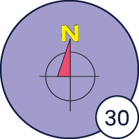 first.
, and 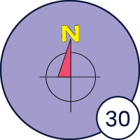 first.
Explain to your students that they will learn the seven most common sounds. You may use the following speech:
Primero, vamos a conocer los 7 sonidos más comunes. Yo voy a decir un sonido, y mientras lo hago, quiero que observen bien cómo muevo la boca para que puedan imitar la articulación correctamente. Después, elegiré a uno de ustedes para que lo repita en voz alta. Mientras tanto, los demás pueden practicar también, pero con sus micrófonos apagados.
-
a. Click on the icon of the first sound and say it out loud. Make sure all students are able to see how you articulate the sound.
-
b. Select a student and ask him/her to say the sound out loud after you.
-
c. Continue in the same fashion until you have taught the seven sounds.
-
-
Step 4. Spell out the words provided for every sound taught so that the students learn to link the sounds.
Explain to your students how the color chart works to form words. You may use the following speech:
Ahora vamos a aprender cómo unir un sonido con otro para ir construyendo una palabra paso a paso, y logrando además una pronunciación perfecta. Por ejemplo:
-
a. Model the first word: Demonstrate on the screen how to join the individual sounds as you gradually form the complete word.
I’m
-
b. Select one student and have him/her join the sounds aloud as you gradually show them on the screen. Have the student say the word at least twice. It is not necessary to provide definitions. Continue in the same fashion with different students until all the words have been practiced.
Words
eight own pine tone main night
-
-
Step 5. Teach seven more sounds:
 ,
,  , 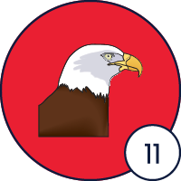,
, 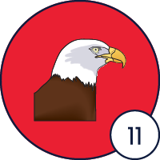,  ,
,  , 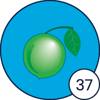,
, 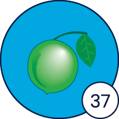,  .
.
-
a. Show the icon of the first sound and say it. Make sure all students are able to see how you articulate the sound.
-
b. Select a student and ask him/her to say the sound out loud.
-
c. Spell out the word provided for the sound taught so that the students learn to link the sounds. Select one student and have him/her join the sounds aloud as you gradually show them on the screen. Have the student say the word at least twice. It is not necessary to provide definitions.
-
d. Continue in the same fashion with the rest of the sounds specified in this section.
Words
ant in team same zone lime cat
-
-
Step 6. Help students practice sound blending by reading whole words formed from a slot machine-style display.
-
a. Share the slot machine on the screen.
-
b. Select a student.
-
c. Activate the slot machine so it randomly stops on three sounds.
-
d. Have the student connect the sounds and say the word aloud.
-
e. Once the word is pronounced correctly, click on the button on the left to move forward on the bar.
-
f. Repeat the same procedure with four more students.
-
 ,
,  ,
,  , 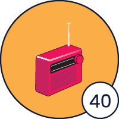,
, 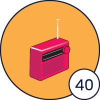,  .
.
 ,
,  ,
,  , 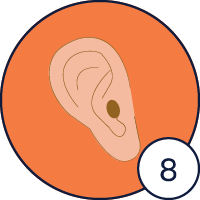-,
, 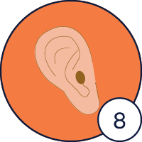-,  -,
-,  -, 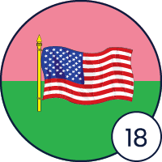.
-, 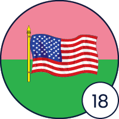.